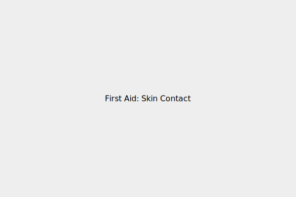

ප්රථමාධාර
රසායනික ද්රව්ය සමේ ස්පර්ශ වුවහොත් ප්රථමාධාර
- ක්ෂණිකව දූෂිත වූ ඇඳුම් ඉවත් කරන්න.
- අවම වශයෙන් විනාඩි 15-20ක් වත් ගලා යන ජලයෙන් (ധാരാളം ජලයෙන්) සම හොඳින් සෝදා හරින්න.
- හොඳින් සේදීමෙන් පසු, හැකි නම් සහ සුදුසු නම්, මෘදු සබන් යොදා නැවත සෝදන්න.
- සමේ දැවිල්ල හෝ වෙනත් රෝග ලක්ෂණ පවතී නම් හෝ උත්සන්න වේ නම් වහාම වෛද්ය උපදෙස් ලබා ගන්න.